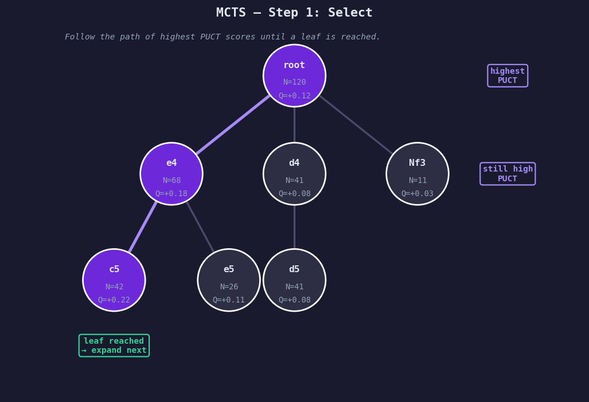
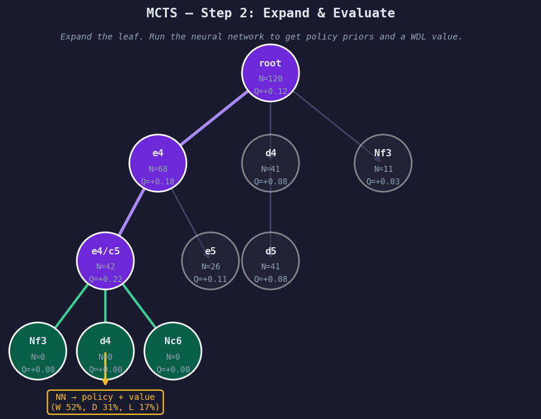
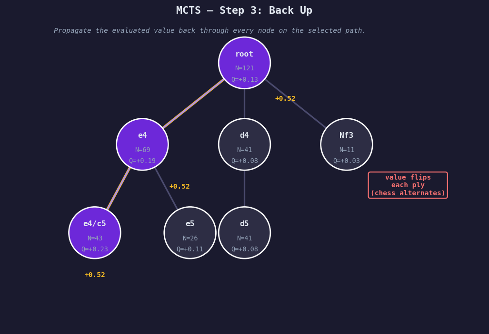
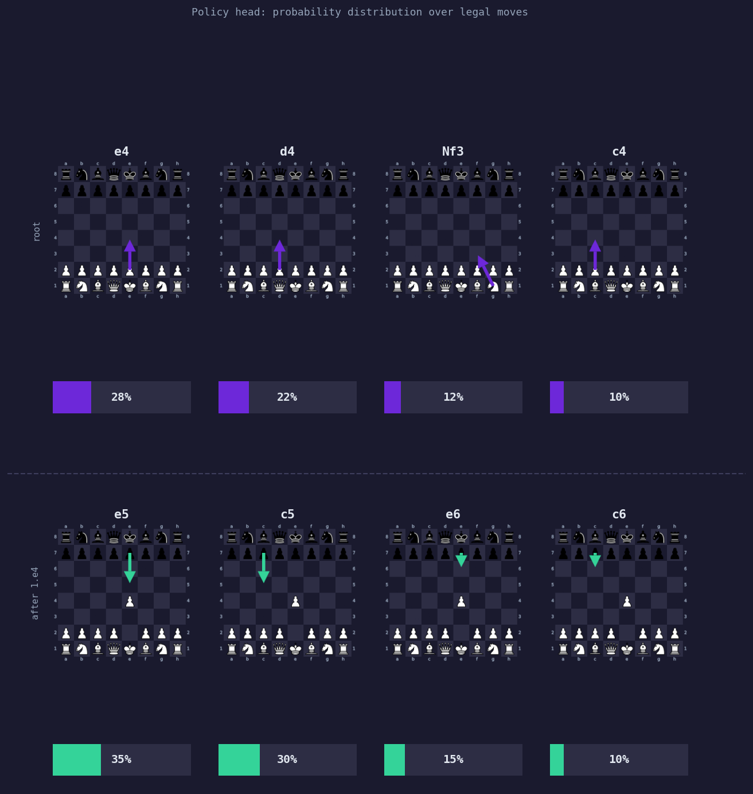
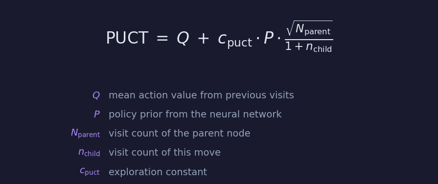

How Does it Work?
Xerces is a neural-network-guided MCTS chess engine. Like AlphaZero and Leela Chess Zero, it works by having a model supply priors over legal moves, then using search to test those beliefs against actual continuations.
The short version is:
- The model looks at a chess position.
- It predicts which moves look promising and who is likely winning.
- MCTS uses those predictions to build a search tree.
- The search repeatedly explores, expands, evaluates, and backs up results.
- The engine plays the move that survives the most search pressure.
- The resulting search data becomes training data for the next model.
MCTS 101
Monte Carlo Tree Search is a way to make decisions by building a tree of possible future positions. Each node in the tree is a board position. Each edge is a legal move. The root is the current position.
For each simulation, MCTS does four things:
- Select a path through the existing tree.
- Expand a new position that has not been searched yet.
- Evaluate that position with the neural network.
- Back up the result through every node on the selected path.
 |
 |
 |
Over many simulations, good moves tend to collect more visits. Bad moves may still be checked, but they receive less attention unless there is a reason to look again.
This is different from a traditional alpha-beta engine like Stockfish. Stockfish uses a shallow NN evaluation and extremely fast but relatively unguided tactical search. Xerces instead uses a neural network evaluation and a search process that behaves more like progressive evidence gathering.
What the Neural Network Predicts
The model produces two outputs.
The first is policy. Policy is a probability distribution over moves. It tells MCTS which moves look promising before the search has spent much time on them.
The second is value. Value is the model's estimate of the position. Xerces uses a win/draw/loss head — rather than a single scalar, the model returns three probabilities from the side-to-move perspective that sum to 1.
So when the model evaluates a position, it returns something like:
policy: e4 28%, d4 22%, Nf3 12%, c4 10%, ...
value: W 45% D 38% L 17%
The model is called at every new node in the tree — not just the root. Each time the search expands a position it hasn't seen before, the network evaluates it and returns a fresh set of priors and a WDL estimate for that specific position. This is how the policy adapts as the game progresses.

The model gives the search a starting point. Those values are then tested by repeatedly running the expand, evaluate, and back up loop.
How PUCT Guides the Search
PUCT is the selection formula used by AlphaZero-style MCTS engines. It balances two competing forces:
- Exploitation: search moves that already look good.
- Exploration: search moves that the model thinks may be promising, even if they have not been visited much yet.
Each candidate move receives a score at every selection step:

Q is the running average value from previous visits — it rises if a move keeps leading to good positions, falls if it doesn't. U is the exploration bonus: proportional to the policy prior and inversely proportional to visit count, so high-prior moves get early attention but that bonus shrinks as visits stack up.
The search repeatedly chooses the move with the highest Q + U score. Early in
the search, policy matters a lot. Later in the search, accumulated evidence
matters more.
One Simulation Step
A single Xerces simulation looks roughly like this:
start at root
while current node is already expanded:
choose child with best PUCT score
move to that child
evaluate the new leaf position with the neural network
create child nodes using the policy output
back up the value through the selected path
During backup, the evaluated value updates visit counts and average values along the path. Because chess alternates sides, the value is flipped as it moves from one player's perspective to the other.
After thousands of simulations, the root node contains a visit distribution over legal moves. The most-visited move is usually the move Xerces plays.
Why Visits Matter
The visit count is important because it represents search confidence. A move can look good after one evaluation and still collapse after deeper exploration. A move that attracts thousands of visits has survived more pressure.
This is also why MCTS produces useful training targets. The model does not only learn from the final game result. It learns from the search distribution itself. If MCTS spends most of its time on one move, the next model is trained to assign that move a higher prior in similar positions.
That creates the core improvement loop:
better model -> better search -> better training targets -> better model